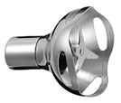

удобный Блендер
KitchenAid KHB2571
- 2 года
гарантии - 100 лет
бренду - номер 1
в америке
повседневную работу на кухне
простой и приятной
преимущества блендера
- 6 насадок,
2 чаши - 5 скоростей
и много режимов - Высокая
мощь - Острейшие
лезвия - Тихая работа
блендера - Чемодан
для хранения
Комплектация
-
Лезвие
в форме звездыОдно из самых популярных насадок служит для измельчения различных сортов варенного мяса , шинковки овощей и фруктов и других блюд и орехов
-
Лезвие
в форме Sнезаменимо для смешивания и приготовление супов пюре из варенных овощей и детских супчиков
-
Лопасть для
взбиванияЛопасть для взбивания пены в кофейных напитков, для готовки различных смесей и других блюд
-
2 съемные
насадкиНасадки из прочнейшей нержавейщей стали размельчат любую пищу
-
венчик
Отлично подходит для насыщения воздухом, взбивания мусов и кремовых консистенций
-
Защитный
ободПрочный обод от защиты посуды от механических воздействий острых лезвий
-
 Мерный
Мерный
стакан 1 л.Взбивает большие обьемов еды, и напитков Незаменим для блендера
-
Кейс
для храненияУдобное хранение блендера, отличный защита. Твердый корпус. Стильный внешний вид
-
Малый
стаканОтличная герметизация, перемешивает всю твердую еду: орехи ,лед. Предназначен для небольших объемов